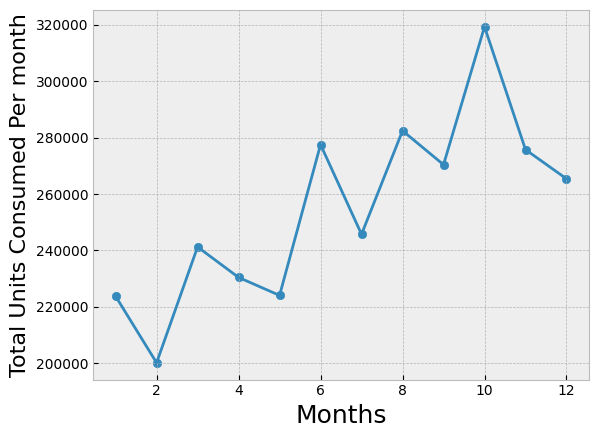
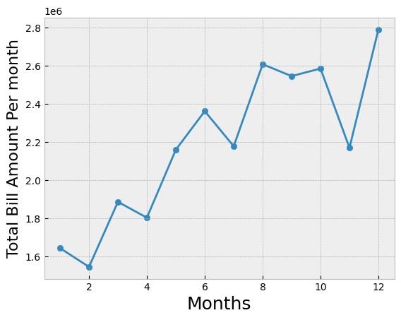
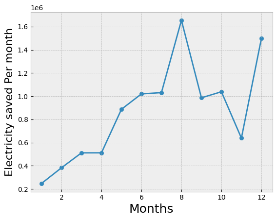

Dashboard

Unit Consumption
This data shows the amount of units consumed in KWh every month for the year. The image depicts a line chart illustrating the consumption of units over the course of the previous year. The chart is plotted with time along the horizontal axis, broken down into months, while the vertical axis denotes the quantity of units consumed for each month for the year 2023.

Electricity Charges
The line chart serves as a tool for understanding the campus's electricity expenditure throughout the year, enabling the students and staff to identify trends, pinpoint areas of concern, and strategize for improved efficiency and cost-effectiveness in the future.
